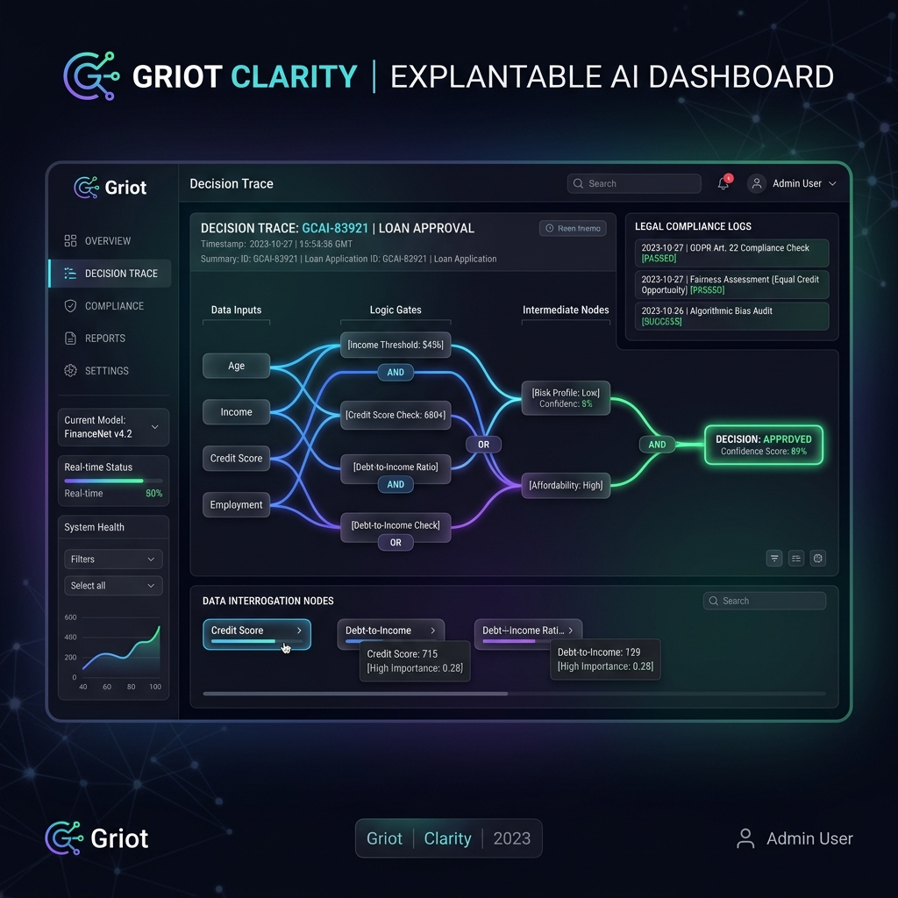

Griot Clarity
Explainable AI (XAI) Middleware designed for the African digital economy.
The Clarity Trace
The Black Box Liability: As institutions in Ghana rely on AI for lending, hiring, and admissions, they face legal non-compliance and discrimination risks. The Ghana Data Protection Act (2012) mandates individual rights to logic involved in automated decisions.
Logic Mapping & Interrogation: Griot Clarity is a pluggable diagnostic layer between internal engines and external interfaces. By treating organizational criteria as logic gates, it interrogates execution paths and logs specific feature values.
The Two-Tier Explanation: It maps applications against specific logic gates rather than providing simplistic rejections. Applicants receive a trace highlighting exact points of failure (e.g., missing academic qualifications) matched against the advancing pool context.

Target Industries & Use Cases
Financial Services
Loan and Credit Denials: Provides an automated logic trace for rejected SME/personal loans, satisfying Bank of Ghana transparency mandates and easing consumer protection complaints.
Insurance Underwriting: Explains risk surcharges by explicitly showing the weighting of health or age factors in premium calculations.
Academic Boards
Post-Graduate Admissions: Manages high application volumes with a self-service AI portal where students can securely compare their technical scores against cohort cut-offs.
Research Innovation Grants: Provides transparent audits for government bodies on why a startup was not funded, citing explicit scalability metrics.
Corporate Recruitment
Mass-Scale Hiring: Proves to regulators that rejections are based purely on aptitude or experience rather than demographic bias.
Vendor Selection: Provides rejected vendors complete data-driven breakdowns of their technical versus financial scores compared strictly to the winning bid.
The Strategic Business Case
Griot Clarity solves the "Black Box" transparency gap problem efficiently. By fulfilling Data Protection Act requirements, it acts as a turnkey compliance tool to prevent massive regulatory fines. Operationally, providing automated self-service logic trees reduces HR and support tickets by up to 80%. Ultimately, Griot Clarity generates revenue via transactional API fees per trace or robust enterprise subscriptions for continual model auditing and monitoring.